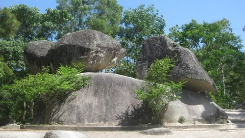

Bãi biển Sầm Sơn

Bãi biển Sầm Sơn có hình trăng khuyết, chạy dài 9km từ chân núi Trường Lệ đến xã Quảng Cư (thị xã Sầm Sơn), rộng hàng nghìn mét, bằng phẳng, cát mịn, không có chỗ quá sâu, lầy thụt hoặc đá ngầm, sau hô nhờ đó, đã tạo nên những bãi tắm lý tưởng, người tắm có thể ra khá xa bờ vẫn thấy an toàn.
Nước biển Sầm Sơn có độ mặn và nhiệt độ thích hợp, có lợi cho sức khỏe và có khả năng chữa được một số bệnh, rất thích hợp cho con người nghỉ ngơi, an dưỡng. Nhà học giả người Pháp Le Breton nhận định: “Đây là bãi tắm tốt nhất để phục hồi sức khoẻ”.
Sóng biển Sầm Sơn nhẹ nhàng, khí hậu điều hòa như chiếc máy điều hòa nhiệt độ khổng lồ, giữ cho mùa hè lộng gió và dịu mát, mùa đông bớt phần giá buốt. Biển Sầm Sơn có gần 1.000 loại tôm, cua, cá và nhiều hải sản quí hiếm; đặc biệt có món gỏi cá và lẩu rắn biển được nhiều người ưa thích.
Sầm Sơn còn có một loại phương tiện đi biển đặc biệt đó là: những chiếc mảng làm bằng luồng. Năm 1994, ông Tim Severin đã đóng và hạ thủy tại đây một chiếc mảng vượt đại dương làm bằng những cây luồng Thanh Hóa. Ông mời anh Lương Văn Lợi - một ngư dân sở tại cùng vượt Thái Bình Dương và trở về an toàn. Đến tham quan, ta có thể nghe anh Lợi kể lại chuyện vượt biển này và xem những bức ảnh chụp chiếc mảng đang thử thách trước những cơn bão lớn giữa vùng biển Nhật Bản và Đài Loan.
Sầm Sơn không chỉ có bãi biển đẹp, bãi tắm tuyệt vời, lại có cả núi đá, đủ các hòn lớn, nhỏ, nằm, ngồi, chồng lên nhau thành muôn hình muôn vẻ, ngay cạnh mép nước biển, có rừng cây bóng mát, có đền chùa, di tích với nhiều truyền thuyết cổ tích, dân gian... lý thú. Đó là đền thờ thần Độc Cước, đền Cô Tiên, đền Tô Hiến Thành, hòn Trống Mái v.v...
Đền Độc Cước: Đền thờ một vị thánh một chân, có kỳ tích bảo hộ quê hương chống loài quỉ biển. Đền ở trên núi Cổ Rùa, thuộc dãy Trường Lệ. Dãy núi này có hình thù một phụ nữ nằm ngửa, bộ ngực nở nang. Đền có ghi năm trùng tu vào niên hiệu Chính Hòa (1675 - 1705).
Đền Cô Tiên: Đền được xây trên hòn Đầu Voi, dưới chân là Vụng Ngọc và hòn Câu. Nơi đã được Bác về thăm và nghỉ tại đây (1960).
Đền thờ Tô Hiến Thành: một đại thần triều Lý (thế kỷ XII) nổi tiếng thanh liêm chính trực, từng cầm quân vào dẹp loạn ở vùng ven biển Thanh Hóa, nhờ thế nhân dân được an cư lạc nghiệp.
Hòn Trống mái: Nơi có hai hòn đá to nhỏ châu vào nhau, xung quanh là những đá nhỏ. Truyền thuyết nói đây là một gia đình có đôi vợ chồng và đàn con đã hóa thành đá, để vĩnh viễn thuỷ chung bên nhau. Nhà văn Khái Hưng có tiểu thuyết Trống Mái là do cảm hứng từ cảnh đẹp này.
Đã từ lâu Sầm Sơn nổi tiếng là một khu du lịch và nghỉ mát có nhiều thắng cảnh. Kể từ năm 1981 đến nay, Sầm Sơn được xây dựng và phát triển trên những quy mô mới của một thị xã du lịch. Hàng trăm khách sạn, cơ sở điều dưỡng của các bộ, ngành ở Trung ương và trong tỉnh, của các tư nhân với nhiều kiểu dáng vừa hiện đại, vừa đậm nét kiến trúc truyền thống được xây dựng với những điều kiện phục vụ ngày càng hiện đại, nhằm phục vụ cho khách tham quan du lịch, nghỉ mát trong nước và khách nước ngoài. Trong tương lai, khu du lịch và nghỉ mát này sẽ còn được đầu tư và phát triển.